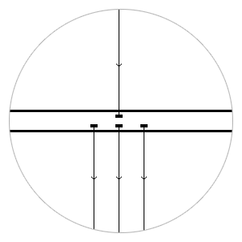

64+64
Формула
- До 64 RX + 64 TX портов
- Режимы: 1 GbE, 10 GbE, 40 GbE
- Каждый порт одновременно работает на вход и выход
- Корпус 1U для монтирования в стойку

Балансировка
- Симметричная
- Five tuple
- По MAC-адресам
- По IP-адресам
Фильтрация
- 10к+ не блокирующих фильтров
- Фильтры по Ethertype
- Фильтры по by MAC, Port, IP
- Поддержка VLAN, MPLS
- DPI-фильтры
Агрегация
- Агрегация из нескольких в один
- Агрегация с фильтрацией
- Loopback (внутреннее замыкание TX на RX)
- Force up
Встроенный мониторинг
- Мониторинг в реальном времени
- Агрегация статистики
- Статистика по скорости и ошибкам на портах
- Графики
Возможности устройства
-
Mirroring, Redirect, Drop трафика
-
Агрегация/балансировка трафика из нескольких 10GbE портов в 10/40 GbE порты
-
Поддержка балансировки трафика с MPLS
-
Управляемая балансировка трафика по критериям:
-
MAC + MAC (simmetrize)
-
MAC source + MAC destination – IP + IP (simmetrize)
-
IP source + IP destination
-
IP + Port + ProtoType (5 tuple)
-
EtherType
-
Фильтрация сетевого трафика (до 128 тыс. фильтров) по критериям:
- EtherType
- MAC source, MAC destination с поддержкой маски – IP source, IP destination с поддержкой маски
- Port source, Port destination с поддержкой маски – ProtoType
- VLAN с поддержкой маски
- VLAN2 с поддержкой маски
-
Удаленное управление через web-интерфейс
-
Просмотр статистики загрузки и ошибок на интерфейсах
-
Возможность доработки под специфические требования заказчика
Технические характеристики
-
Порты: 48 х 1/10GbE SFP+ (48 TX + 48 RX) и 4 х 10/40GbE QSFP+
-
Общее количество Tx/Rx портов до 128
-
Не блокируемая коммутационная матрица производительностью 1,28 Тб/c
-
Пропускная способность до 960 Mpps
-
Низкая задержка (latency) — 500 нс
-
Поддержка Jumbo frame 12К
-
Пакетный буфер — 9 МБ
-
Резервирование и «горячая замена» питания и охлаждения
-
Максимальная потребляемая мощность до 450 Вт
-
Конструктив 1RU
-
Габаритные размеры (ВxШxГ): 44 x 435 x 394 мм
-
Вес 9,5 кг
Простой, но умный пользовательский интерфейс